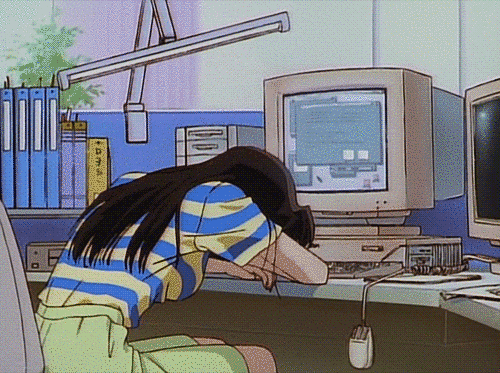
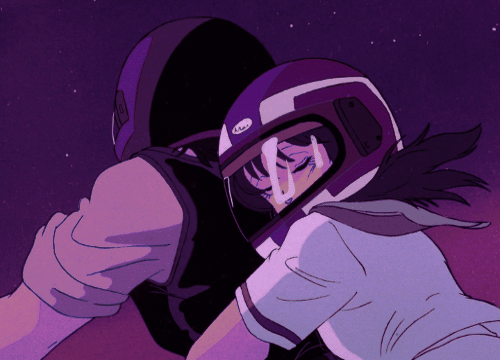

AKIHABARA
LAS PELICULAS DE ANIME QUE NO PUEDES DEJAR PASAR
La sección que leiste anteriormente era sobre las clásicas, pero que tal si ahora hablamos sobre aquellas que tocarán las fibras de tu corazón y sin dudarlo te harán derramar más de una lagrima, y si te animas a verlas recuerda tener a la mano una caja de pañuelos |
 |
 Inicio Peliculas clásicas |
 Para llorar un rato |
 Nostalgia |
 Próximos estrenos |
Hotarubi No mori eIntrigada por la historia de un dios de la montaña, Hotaru Takegawa, de seis años, pierde su camino en el antiguo bosque mientras visita a su tío. Agotada y desesperada por ayuda, Hotaru está encantada de encontrar un espíritu del bosque enmascarado llamado Gin. Ella aprende por las malas que no debería tocar al niño, o él desaparecería. A pesar de esto, Gin saca a Hotaru del bosque y le advierte que nunca regrese cuando promete volver con un regalo. Sin prestar atención a sus palabras de advertencia, y a pesar de estar separados tanto por la distancia como por los planos de existencia, Hotaru y Gin se hacen amigos íntimos cuando lo visita todos los veranos. Sin embargo, su relación y resolución se ponen a prueba, cuando los sentimientos románticos entran en conflicto con la única regla. | |||||
El recuerdos de MarnieAnna es una chica solitaria, sin amigos, que vive con sus padres adoptivos. Un día es enviada con el señor y la señora Pegg. Allí, donde se extienden las dunas de arena, conoce a una chica llamada Marnie, quien pronto se convertirá en su mejor amiga. Habiendo aprendido muchas cosas sobre la amistad, Anna se dará cuenta de que Marnie no es quien parece. | |||||
Anohana: La peliculaEs una pelicula recompilatoria del anime con algunas escenas extra.Un grupo de amigos de la infancia se separa a causa de la muerte de una amiga. Ahora Jintan, un chico parte del grupo de amigos, sufre de estrés a causa del fantasma de Menma, que sigue queriendo que este cumpla una promesa que le hizo antes de su muerte. Pero para eso Jintan deberá reunir sus antiguos amigos de la infancia; el problema es que ellos han cambiado mucho. | |||||
Los niños loboCuando era poco más que una adolescente, Hana se enamoró de un Hombre Lobo. Puede parecer extraño, pero durante años fueron inmensamente felices, y tuvieron dos hijos: Yuki y Ame, que nacieron también con la capacidad de convertirse en lobos. Tras la repentina muerte de su compañero, Hana decide mudarse al campo para así criar a sus hijos en un entorno tranquilo, donde sus extraordinarias facultades no sean descubiertas. Sin embargo, al crecer, Yuki y Ame deberán decidir si quieren vivir como humanos o como lobos. | |||||
I want to eat your pancreasUn día, un solitario estudiante de secundaria encuentra un libro de bolsillo en el hospital. Su título es "Conviviendo con la Muerte". Resulta ser un diario de una compañera de clase, Sakura Yamauchi, en el cual escribe que, debido a su enfermedad pancreática, le quedan sólo unos cuantos meses de vida. Esto hace que surja una amistad entre ellos muy especial, desvelando la difícil circunstancia por la que atraviesa Sakura no sólo en relación a su enfermedad, sino también a otros factores que convierten su día a día en una cruel pesadilla. |  |
Inicio Peliculas clásicas |
Para llorar un rato |
Nostalgia |
Próximos estrenos |